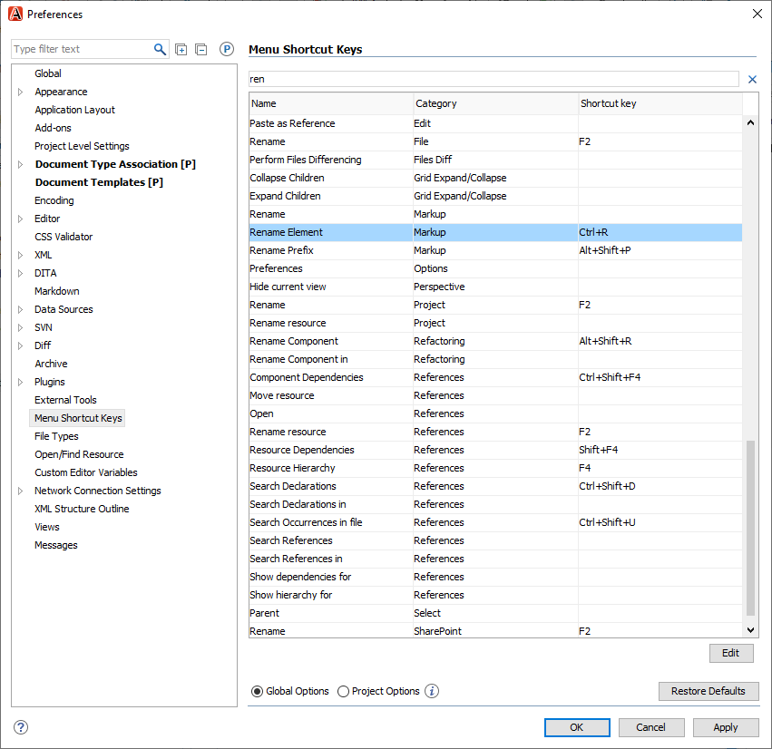
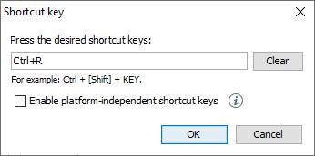

Actions that you use regularly can be made easier to do with shortcut keys.
-
Go to .
-
In the Search bar, look for a feature, for example Rename element.
-
Click the feature in the list and click Edit.

-
Press the key combination you want to use.
The shortcut will appear in the field.

-
Click OK.
The shortcut is added.
-
Select Global Options or Project Options to choose whether you want to use the shortcut in all projects or only this one.
-
Click Apply and OK.